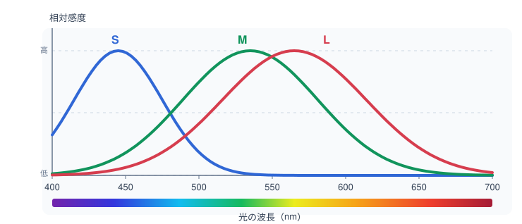
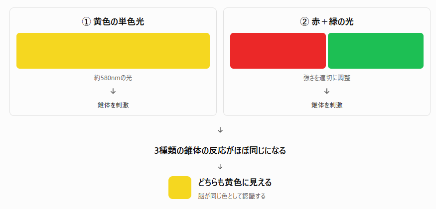
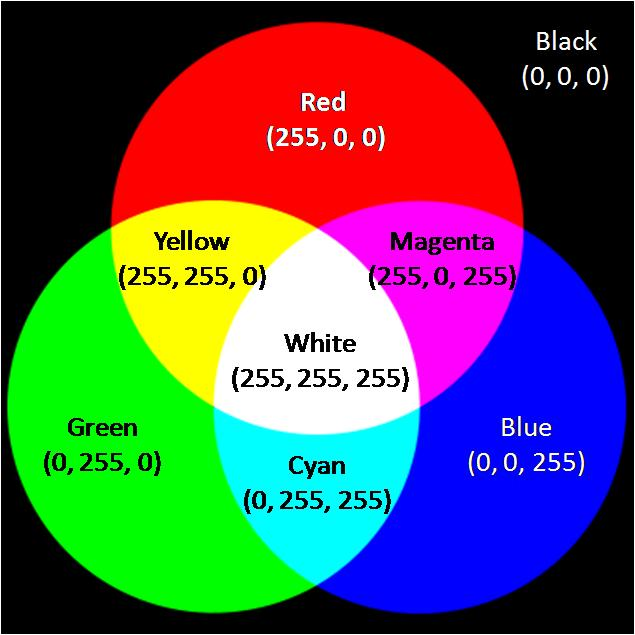
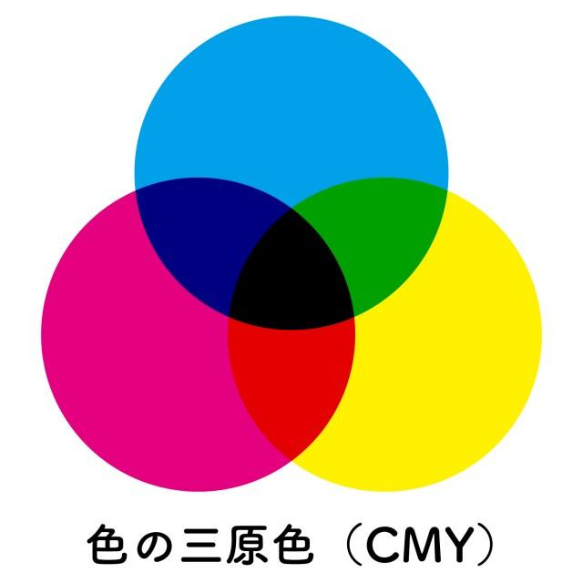

RGBの基本
RGB（Red・Green・Blue）とは、赤（Red）、緑（Green）、青（Blue）の3色の光を組み合わせて、さまざまな色を表現する方式です。この3色を光の三原色といいます。
RGBは、パソコンやスマートフォンのディスプレイ、テレビなど、光を利用して色を表示する機器で広く使われています。
RGBでは、それぞれの光の強さを調整することで色を表現します。例えば、赤い光だけを強くすれば赤になり、赤と緑の光を組み合わせれば黄色になります。
3色の光を組み合わせて色を表現する仕組みを、加法混色といいます。
なぜRGBの3色でさまざまな色を表現できるのか
RGBの3色で多くの色を表現できるのは、人間の目が色を認識する仕組みと関係しています。
人間の目の奥にある網膜には、光を感じ取る視細胞があります。そのうち、明るい場所で色を感じ取る働きをするのが、錐体（すいたい）細胞です。
錐体細胞には、主に次の3種類があります。
| 種類 | 特徴 |
|---|
| S錐体 | 波長の短い光に敏感（青に近い領域） |
| M錐体 | 中程度の波長の光に敏感（緑に近い領域） |
| L錐体 | 波長の長い光に敏感（黄緑から赤にかけての領域） |
それぞれの錐体細胞は、特定の波長の光だけに反応するのではなく、ある程度広い範囲の波長に反応します。そのため、3種類の錐体細胞が反応する波長の範囲は互いに重なっています。

例えば、黄色付近の波長の光が目に入ると、L錐体とM錐体がともに刺激されます。人間の脳は、3種類の錐体細胞が受け取った刺激の組合せをもとに、光の色を認識します。
RGBは、この人間の色覚の仕組みを利用しています。
例えば、黄色の光を直接出さなくても、赤と緑の光を適切な強さで組み合わせれば、黄色の光を見たときとよく似た刺激を錐体細胞に与えられます。そのため、人間の目には黄色として認識されます。

つまり、人間の目は光に含まれる波長を一つひとつ区別しているのではなく、主に3種類の錐体細胞の反応の組合せから色を判断しています。このため、異なる波長の光の組合せであっても、錐体細胞への刺激が同じになれば、同じ色に見えることがあります。
この仕組みにより、赤・緑・青の3色の光の強さを調整するだけで、多くの色を表現できます。
ただし、S・M・Lの各錐体細胞が、それぞれ青・緑・赤の光だけに対応しているわけではありません。また、RGBですべての色を再現できるわけではなく、実際に表現できる色の範囲はディスプレイの性能などによって異なります。
加法混色の仕組み
加法混色とは、異なる色の光を重ね合わせることで、新たな色を作り出す方法です。
光を重ねると、それぞれの光が加わるため、基本的には明るくなる方向に変化します。
光の三原色を組み合わせると、次のような色になります。
| 光の組合せ | 表現される色 |
|---|
| 赤（R）＋緑（G） | 黄色（イエロー） |
| 緑（G）＋青（B） | シアン（水色に近い色） |
| 青（B）＋赤（R） | マゼンタ（赤紫に近い色） |
| 赤（R）＋緑（G）＋青（B） | 白 |
| 光がない状態 | 黒 |

赤・緑・青の光を同じ割合で弱く重ねると暗い灰色になり、強くすると明るい灰色になります。そして、3色とも最大の強さにすると白になります。
一方、3色の強さに差がある場合は、その組合せに応じて色味が生じます。
このように、RGBでは、3色の光の組合せとそれぞれの強さによって、明るさや色合いが決まります。
RGBによる色の数値表現
コンピュータでは、赤・緑・青の光の強さを数値で表します。
一般的なRGB画像では、それぞれの成分を0～255の整数で表すことが多いです。
それぞれの数値は、0が最小、255が最大の強さに対応します。
例えば、RGB(255, 0, 0)は赤が最大で、緑と青が0であるため、赤色を表します。
代表的なRGB値には、次のようなものがあります。
| RGB値 | 色 |
|---|
| (0, 0, 0) | 黒 |
| (255, 255, 255) | 白 |
| (255, 0, 0) | 赤 |
| (0, 255, 0) | 緑 |
| (0, 0, 255) | 青 |
| (255, 255, 0) | 黄色 |
| (0, 255, 255) | シアン |
| (255, 0, 255) | マゼンタ |
| (128, 128, 128) | 灰色 |
RGBとビット数・階調数
コンピュータでは、RGBの各成分の数値を2進数で記録します。
1つの成分を表すために使用するビット数によって、表現できる明るさの段階数が決まります。
この段階数を階調数といいます。
一般に、1つの成分をbビットで表すとき、階調数は次の式で求められます。
階調数＝2b
例えば、1つの成分が8ビットの場合、
28＝256
となり、0～255の256段階の強さを表現できます。
RGBの3成分がそれぞれ独立に値を取れる場合、表現できる色の組合せ数は、各成分の階調数を掛け合わせて求めます。
総色数＝2a × 2b × 2c
したがって、
総色数＝2a+b+c
となります。
特に、RGBの各成分を8ビットで表す方式は、3成分の合計が24ビットになるため、24ビットフルカラーと呼ばれます。
24ビットフルカラーでは、
224＝16,777,216
より、約1,677万通りのRGB値を表現できます。
RGBとピクセル・画像データ量
デジタル画像は、ピクセル（画素）と呼ばれる小さな点の集まりとして表現されます。
RGB画像では、それぞれの画素に赤・緑・青の数値が記録されています。ディスプレイは、これらの値に応じて色を表示します。
例えば、24ビットフルカラー画像の場合、1画素に必要なデータ量は、24ビットです。
8ビット＝1バイトなので、24 ÷ 8＝3バイトであり、1画素あたり3バイトとなります。
画像全体のデータ量は、次の式で求められます。
データ量（バイト）＝横の画素数 × 縦の画素数 × 1画素のバイト数
例えば、横1,920画素、縦1,080画素の24ビットフルカラー画像では、
1920 × 1080 × 3＝6,220,800バイト
となります。
1 MB＝1,000,000バイトとすれば、
6,220,800 ÷ 1,000,000＝約6.22 MB
となります。
実際の画像ファイルでは、保存形式や圧縮方式によってファイルサイズが変わります。
なお、容量の単位には1 MB＝1,000,000バイトとする場合と、1 MiB＝1,048,576バイトとする場合があります。問題文で指定された換算方法を確認することが重要です。
RGBとCMY・CMYKの違い
RGBは光を加える加法混色ですが、印刷物では主に減法混色という異なる方式が使われます。
減法混色とは、インクなどの色材が光の一部を吸収することで色を表現する仕組みです。
減法混色の基本となる3色は、次のとおりです。
- C（Cyan）：シアン
- M（Magenta）：マゼンタ
- Y（Yellow）：イエロー
これらをまとめてCMYといいます。
RGBでは光を重ねることで明るくなるのに対し、CMYではインクを重ねることで吸収される光が増え、基本的には暗くなります。
RGBでは3色の光を十分な強さで重ねると白になります。一方、理想的なCMYの色材では、3色を重ねることで赤・緑・青の光が吸収され、黒になります。

ただし、実際の印刷ではCMYのインクだけで十分に濃い黒を再現することが難しいため、黒（Key Black）のインクを追加したCMYKが広く使われています。
RGBとCMY・CMYKの違いをまとめると、次のようになります。
| 比較項目 | RGB | CMY・CMYK |
|---|
| 基本となる色 | 赤・緑・青 | シアン・マゼンタ・イエロー |
| 混色方式 | 加法混色 | 減法混色 |
| 色を作る原理 | 光を加える | 光を吸収する |
| 重ねたときの傾向 | 明るくなる | 暗くなる |
| 主な用途 | ディスプレイ・テレビ | プリンタ・印刷物 |
また、色を表す方式にはHSVもあります。
HSVは、次の3つの要素で色を表現する方式です。
- H（Hue）：色相。赤、黄、緑、青などの色の種類
- S（Saturation）：彩度。色の鮮やかさ
- V（Value）：明度。色の明るさを表す指標
HSVは、RGBやCMYとは異なり、色の性質を直感的に指定しやすい方式です。
そのため、画像編集ソフトなどで色を選択・調整するためのカラーピッカーに利用されています。